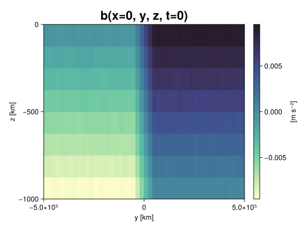
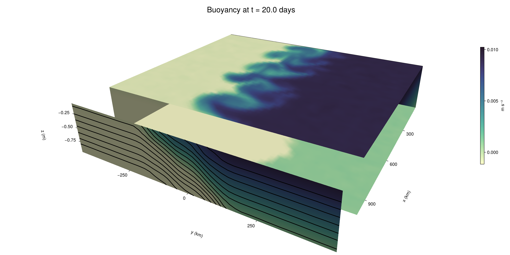

Baroclinic adjustment
In this example, we simulate the evolution and equilibration of a baroclinically unstable front.
Install dependencies
First let's make sure we have all required packages installed.
using Pkg
pkg"add Oceananigans, CairoMakie"using Oceananigans
using Oceananigans.UnitsGrid
We use a three-dimensional channel that is periodic in the x direction:
Lx = 1000kilometers # east-west extent [m]
Ly = 1000kilometers # north-south extent [m]
Lz = 1kilometers # depth [m]
grid = RectilinearGrid(size = (48, 48, 8),
x = (0, Lx),
y = (-Ly/2, Ly/2),
z = (-Lz, 0),
topology = (Periodic, Bounded, Bounded))48×48×8 RectilinearGrid{Float64, Periodic, Bounded, Bounded} on CPU with 3×3×3 halo
├── Periodic x ∈ [0.0, 1.0e6) regularly spaced with Δx=20833.3
├── Bounded y ∈ [-500000.0, 500000.0] regularly spaced with Δy=20833.3
└── Bounded z ∈ [-1000.0, 0.0] regularly spaced with Δz=125.0Model
We built a HydrostaticFreeSurfaceModel with an ImplicitFreeSurface solver. Regarding Coriolis, we use a beta-plane centered at 45° South.
model = HydrostaticFreeSurfaceModel(; grid,
coriolis = BetaPlane(latitude = -45),
buoyancy = BuoyancyTracer(),
tracers = :b,
momentum_advection = WENO(),
tracer_advection = WENO())HydrostaticFreeSurfaceModel{CPU, RectilinearGrid}(time = 0 seconds, iteration = 0)
├── grid: 48×48×8 RectilinearGrid{Float64, Periodic, Bounded, Bounded} on CPU with 3×3×3 halo
├── timestepper: QuasiAdamsBashforth2TimeStepper
├── tracers: b
├── closure: Nothing
├── buoyancy: BuoyancyTracer with ĝ = NegativeZDirection()
├── free surface: ImplicitFreeSurface with gravitational acceleration 9.80665 m s⁻²
│ └── solver: FFTImplicitFreeSurfaceSolver
├── advection scheme:
│ ├── momentum: WENO reconstruction order 5
│ └── b: WENO reconstruction order 5
└── coriolis: BetaPlane{Float64}We start our simulation from rest with a baroclinically unstable buoyancy distribution. We use ramp(y, Δy), defined below, to specify a front with width Δy and horizontal buoyancy gradient M². We impose the front on top of a vertical buoyancy gradient N² and a bit of noise.
"""
ramp(y, Δy)
Linear ramp from 0 to 1 between -Δy/2 and +Δy/2.
For example:
```
y < -Δy/2 => ramp = 0
-Δy/2 < y < -Δy/2 => ramp = y / Δy
y > Δy/2 => ramp = 1
```
"""
ramp(y, Δy) = min(max(0, y/Δy + 1/2), 1)
N² = 1e-5 # [s⁻²] buoyancy frequency / stratification
M² = 1e-7 # [s⁻²] horizontal buoyancy gradient
Δy = 100kilometers # width of the region of the front
Δb = Δy * M² # buoyancy jump associated with the front
ϵb = 1e-2 * Δb # noise amplitude
bᵢ(x, y, z) = N² * z + Δb * ramp(y, Δy) + ϵb * randn()
set!(model, b=bᵢ)Let's visualize the initial buoyancy distribution.
using CairoMakie
# Build coordinates with units of kilometers
x, y, z = 1e-3 .* nodes(grid, (Center(), Center(), Center()))
b = model.tracers.b
fig, ax, hm = heatmap(y, z, interior(b)[1, :, :],
colormap=:deep,
axis = (xlabel = "y [km]",
ylabel = "z [km]",
title = "b(x=0, y, z, t=0)",
titlesize = 24))
Colorbar(fig[1, 2], hm, label = "[m s⁻²]")
fig
Simulation
Now let's build a Simulation.
simulation = Simulation(model, Δt=20minutes, stop_time=20days)Simulation of HydrostaticFreeSurfaceModel{CPU, RectilinearGrid}(time = 0 seconds, iteration = 0)
├── Next time step: 20 minutes
├── Elapsed wall time: 0 seconds
├── Wall time per iteration: NaN days
├── Stop time: 20 days
├── Stop iteration : Inf
├── Wall time limit: Inf
├── Callbacks: OrderedDict with 4 entries:
│ ├── stop_time_exceeded => Callback of stop_time_exceeded on IterationInterval(1)
│ ├── stop_iteration_exceeded => Callback of stop_iteration_exceeded on IterationInterval(1)
│ ├── wall_time_limit_exceeded => Callback of wall_time_limit_exceeded on IterationInterval(1)
│ └── nan_checker => Callback of NaNChecker for u on IterationInterval(100)
├── Output writers: OrderedDict with no entries
└── Diagnostics: OrderedDict with no entriesWe add a TimeStepWizard callback to adapt the simulation's time-step,
conjure_time_step_wizard!(simulation, IterationInterval(20), cfl=0.2, max_Δt=20minutes)Also, we add a callback to print a message about how the simulation is going,
using Printf
wall_clock = Ref(time_ns())
function print_progress(sim)
u, v, w = model.velocities
progress = 100 * (time(sim) / sim.stop_time)
elapsed = (time_ns() - wall_clock[]) / 1e9
@printf("[%05.2f%%] i: %d, t: %s, wall time: %s, max(u): (%6.3e, %6.3e, %6.3e) m/s, next Δt: %s\n",
progress, iteration(sim), prettytime(sim), prettytime(elapsed),
maximum(abs, u), maximum(abs, v), maximum(abs, w), prettytime(sim.Δt))
wall_clock[] = time_ns()
return nothing
end
add_callback!(simulation, print_progress, IterationInterval(100))Diagnostics/Output
Here, we save the buoyancy, $b$, at the edges of our domain as well as the zonal ($x$) average of buoyancy.
u, v, w = model.velocities
ζ = ∂x(v) - ∂y(u)
B = Average(b, dims=1)
U = Average(u, dims=1)
V = Average(v, dims=1)
filename = "baroclinic_adjustment"
save_fields_interval = 0.5day
slicers = (east = (grid.Nx, :, :),
north = (:, grid.Ny, :),
bottom = (:, :, 1),
top = (:, :, grid.Nz))
for side in keys(slicers)
indices = slicers[side]
simulation.output_writers[side] = JLD2OutputWriter(model, (; b, ζ);
filename = filename * "_$(side)_slice",
schedule = TimeInterval(save_fields_interval),
overwrite_existing = true,
indices)
end
simulation.output_writers[:zonal] = JLD2OutputWriter(model, (; b=B, u=U, v=V);
filename = filename * "_zonal_average",
schedule = TimeInterval(save_fields_interval),
overwrite_existing = true)JLD2OutputWriter scheduled on TimeInterval(12 hours):
├── filepath: ./baroclinic_adjustment_zonal_average.jld2
├── 3 outputs: (b, u, v)
├── array type: Array{Float64}
├── including: [:grid, :coriolis, :buoyancy, :closure]
├── file_splitting: NoFileSplitting
└── file size: 29.3 KiBNow we're ready to run.
@info "Running the simulation..."
run!(simulation)
@info "Simulation completed in " * prettytime(simulation.run_wall_time)[ Info: Running the simulation...
[ Info: Initializing simulation...
[00.00%] i: 0, t: 0 seconds, wall time: 22.378 seconds, max(u): (0.000e+00, 0.000e+00, 0.000e+00) m/s, next Δt: 20 minutes
[ Info: ... simulation initialization complete (25.687 seconds)
[ Info: Executing initial time step...
[ Info: ... initial time step complete (32.976 seconds).
[06.94%] i: 100, t: 1.389 days, wall time: 1.053 minutes, max(u): (1.255e-01, 1.177e-01, 1.618e-03) m/s, next Δt: 20 minutes
[13.89%] i: 200, t: 2.778 days, wall time: 5.685 seconds, max(u): (2.152e-01, 1.745e-01, 1.786e-03) m/s, next Δt: 20 minutes
[20.83%] i: 300, t: 4.167 days, wall time: 5.500 seconds, max(u): (2.809e-01, 2.340e-01, 1.703e-03) m/s, next Δt: 20 minutes
[27.78%] i: 400, t: 5.556 days, wall time: 5.141 seconds, max(u): (3.472e-01, 2.972e-01, 1.726e-03) m/s, next Δt: 20 minutes
[34.72%] i: 500, t: 6.944 days, wall time: 7.564 seconds, max(u): (4.294e-01, 4.220e-01, 1.852e-03) m/s, next Δt: 20 minutes
[41.67%] i: 600, t: 8.333 days, wall time: 8.942 seconds, max(u): (5.494e-01, 6.177e-01, 2.561e-03) m/s, next Δt: 20 minutes
[48.61%] i: 700, t: 9.722 days, wall time: 9.009 seconds, max(u): (8.022e-01, 8.990e-01, 3.439e-03) m/s, next Δt: 20 minutes
[55.56%] i: 800, t: 11.111 days, wall time: 10.360 seconds, max(u): (1.172e+00, 1.119e+00, 4.325e-03) m/s, next Δt: 20 minutes
[62.50%] i: 900, t: 12.500 days, wall time: 12.324 seconds, max(u): (1.384e+00, 1.106e+00, 4.854e-03) m/s, next Δt: 20 minutes
[69.44%] i: 1000, t: 13.889 days, wall time: 11.384 seconds, max(u): (1.362e+00, 9.888e-01, 4.051e-03) m/s, next Δt: 20 minutes
[76.39%] i: 1100, t: 15.278 days, wall time: 8.816 seconds, max(u): (1.260e+00, 1.101e+00, 3.509e-03) m/s, next Δt: 20 minutes
[83.33%] i: 1200, t: 16.667 days, wall time: 6.429 seconds, max(u): (1.343e+00, 1.168e+00, 2.536e-03) m/s, next Δt: 20 minutes
[90.28%] i: 1300, t: 18.056 days, wall time: 6.061 seconds, max(u): (1.324e+00, 1.171e+00, 2.952e-03) m/s, next Δt: 20 minutes
[97.22%] i: 1400, t: 19.444 days, wall time: 5.613 seconds, max(u): (1.337e+00, 1.159e+00, 2.765e-03) m/s, next Δt: 20 minutes
[ Info: Simulation is stopping after running for 2.902 minutes.
[ Info: Simulation time 20 days equals or exceeds stop time 20 days.
[ Info: Simulation completed in 2.903 minutes
Visualization
All that's left is to make a pretty movie. Actually, we make two visualizations here. First, we illustrate how to make a 3D visualization with Makie's Axis3 and Makie.surface. Then we make a movie in 2D. We use CairoMakie in this example, but note that using GLMakie is more convenient on a system with OpenGL, as figures will be displayed on the screen.
using CairoMakieThree-dimensional visualization
We load the saved buoyancy output on the top, bottom, north, and east surface as FieldTimeSerieses.
filename = "baroclinic_adjustment"
sides = keys(slicers)
slice_filenames = NamedTuple(side => filename * "_$(side)_slice.jld2" for side in sides)
b_timeserieses = (east = FieldTimeSeries(slice_filenames.east, "b"),
north = FieldTimeSeries(slice_filenames.north, "b"),
bottom = FieldTimeSeries(slice_filenames.bottom, "b"),
top = FieldTimeSeries(slice_filenames.top, "b"))
B_timeseries = FieldTimeSeries(filename * "_zonal_average.jld2", "b")
times = B_timeseries.times
grid = B_timeseries.grid48×48×8 RectilinearGrid{Float64, Periodic, Bounded, Bounded} on CPU with 3×3×3 halo
├── Periodic x ∈ [0.0, 1.0e6) regularly spaced with Δx=20833.3
├── Bounded y ∈ [-500000.0, 500000.0] regularly spaced with Δy=20833.3
└── Bounded z ∈ [-1000.0, 0.0] regularly spaced with Δz=125.0We build the coordinates. We rescale horizontal coordinates to kilometers.
xb, yb, zb = nodes(b_timeserieses.east)
xb = xb ./ 1e3 # convert m -> km
yb = yb ./ 1e3 # convert m -> km
Nx, Ny, Nz = size(grid)
x_xz = repeat(x, 1, Nz)
y_xz_north = y[end] * ones(Nx, Nz)
z_xz = repeat(reshape(z, 1, Nz), Nx, 1)
x_yz_east = x[end] * ones(Ny, Nz)
y_yz = repeat(y, 1, Nz)
z_yz = repeat(reshape(z, 1, Nz), grid.Ny, 1)
x_xy = x
y_xy = y
z_xy_top = z[end] * ones(grid.Nx, grid.Ny)
z_xy_bottom = z[1] * ones(grid.Nx, grid.Ny)Then we create a 3D axis. We use zonal_slice_displacement to control where the plot of the instantaneous zonal average flow is located.
fig = Figure(size = (1600, 800))
zonal_slice_displacement = 1.2
ax = Axis3(fig[2, 1],
aspect=(1, 1, 1/5),
xlabel = "x (km)",
ylabel = "y (km)",
zlabel = "z (m)",
xlabeloffset = 100,
ylabeloffset = 100,
zlabeloffset = 100,
limits = ((x[1], zonal_slice_displacement * x[end]), (y[1], y[end]), (z[1], z[end])),
elevation = 0.45,
azimuth = 6.8,
xspinesvisible = false,
zgridvisible = false,
protrusions = 40,
perspectiveness = 0.7)Axis3()We use data from the final savepoint for the 3D plot. Note that this plot can easily be animated by using Makie's Observable. To dive into Observables, check out Makie.jl's Documentation.
n = length(times)41Now let's make a 3D plot of the buoyancy and in front of it we'll use the zonally-averaged output to plot the instantaneous zonal-average of the buoyancy.
b_slices = (east = interior(b_timeserieses.east[n], 1, :, :),
north = interior(b_timeserieses.north[n], :, 1, :),
bottom = interior(b_timeserieses.bottom[n], :, :, 1),
top = interior(b_timeserieses.top[n], :, :, 1))
# Zonally-averaged buoyancy
B = interior(B_timeseries[n], 1, :, :)
clims = 1.1 .* extrema(b_timeserieses.top[n][:])
kwargs = (colorrange=clims, colormap=:deep)
surface!(ax, x_yz_east, y_yz, z_yz; color = b_slices.east, kwargs...)
surface!(ax, x_xz, y_xz_north, z_xz; color = b_slices.north, kwargs...)
surface!(ax, x_xy, y_xy, z_xy_bottom ; color = b_slices.bottom, kwargs...)
surface!(ax, x_xy, y_xy, z_xy_top; color = b_slices.top, kwargs...)
sf = surface!(ax, zonal_slice_displacement .* x_yz_east, y_yz, z_yz; color = B, kwargs...)
contour!(ax, y, z, B; transformation = (:yz, zonal_slice_displacement * x[end]),
levels = 15, linewidth = 2, color = :black)
Colorbar(fig[2, 2], sf, label = "m s⁻²", height = Relative(0.4), tellheight=false)
title = "Buoyancy at t = " * string(round(times[n] / day, digits=1)) * " days"
fig[1, 1:2] = Label(fig, title; fontsize = 24, tellwidth = false, padding = (0, 0, -120, 0))
rowgap!(fig.layout, 1, Relative(-0.2))
colgap!(fig.layout, 1, Relative(-0.1))
save("baroclinic_adjustment_3d.png", fig)
Two-dimensional movie
We make a 2D movie that shows buoyancy $b$ and vertical vorticity $ζ$ at the surface, as well as the zonally-averaged zonal and meridional velocities $U$ and $V$ in the $(y, z)$ plane. First we load the FieldTimeSeries and extract the additional coordinates we'll need for plotting
ζ_timeseries = FieldTimeSeries(slice_filenames.top, "ζ")
U_timeseries = FieldTimeSeries(filename * "_zonal_average.jld2", "u")
B_timeseries = FieldTimeSeries(filename * "_zonal_average.jld2", "b")
V_timeseries = FieldTimeSeries(filename * "_zonal_average.jld2", "v")
xζ, yζ, zζ = nodes(ζ_timeseries)
yv = ynodes(V_timeseries)
xζ = xζ ./ 1e3 # convert m -> km
yζ = yζ ./ 1e3 # convert m -> km
yv = yv ./ 1e3 # convert m -> km49-element Vector{Float64}:
-500.0
-479.1666666666667
-458.3333333333333
-437.5
-416.6666666666667
-395.8333333333333
-375.0
-354.1666666666667
-333.3333333333333
-312.5
-291.6666666666667
-270.8333333333333
-250.0
-229.16666666666666
-208.33333333333334
-187.5
-166.66666666666666
-145.83333333333334
-125.0
-104.16666666666667
-83.33333333333333
-62.5
-41.666666666666664
-20.833333333333332
0.0
20.833333333333332
41.666666666666664
62.5
83.33333333333333
104.16666666666667
125.0
145.83333333333334
166.66666666666666
187.5
208.33333333333334
229.16666666666666
250.0
270.8333333333333
291.6666666666667
312.5
333.3333333333333
354.1666666666667
375.0
395.8333333333333
416.6666666666667
437.5
458.3333333333333
479.1666666666667
500.0Next, we set up a plot with 4 panels. The top panels are large and square, while the bottom panels get a reduced aspect ratio through rowsize!.
set_theme!(Theme(fontsize=24))
fig = Figure(size=(1800, 1000))
axb = Axis(fig[1, 2], xlabel="x (km)", ylabel="y (km)", aspect=1)
axζ = Axis(fig[1, 3], xlabel="x (km)", ylabel="y (km)", aspect=1, yaxisposition=:right)
axu = Axis(fig[2, 2], xlabel="y (km)", ylabel="z (m)")
axv = Axis(fig[2, 3], xlabel="y (km)", ylabel="z (m)", yaxisposition=:right)
rowsize!(fig.layout, 2, Relative(0.3))To prepare a plot for animation, we index the timeseries with an Observable,
n = Observable(1)
b_top = @lift interior(b_timeserieses.top[$n], :, :, 1)
ζ_top = @lift interior(ζ_timeseries[$n], :, :, 1)
U = @lift interior(U_timeseries[$n], 1, :, :)
V = @lift interior(V_timeseries[$n], 1, :, :)
B = @lift interior(B_timeseries[$n], 1, :, :)Observable([-0.009360138055413863 -0.008118907313834042 -0.006879323944818311 -0.0056274326960763605 -0.004367333964803632 -0.003109853175586319 -0.0018745507983009583 -0.0006090528408679629; -0.009364022420571105 -0.0081372863709299 -0.006883355915023354 -0.005633924367214666 -0.004388112810309947 -0.0031226570294075814 -0.0018840331836971864 -0.0005995492384833711; -0.009382948849677721 -0.008116671244739795 -0.006871780364108277 -0.005619679812622976 -0.004384015815114924 -0.003110568157056955 -0.001885479916996239 -0.0006652774266986887; -0.009366573772022956 -0.008113707753997024 -0.006892806330406815 -0.005642752807903106 -0.004360593457858162 -0.0031213447343942046 -0.0019079291464341554 -0.0006191319493350649; -0.009351515265645205 -0.008125871510502326 -0.006873000996527791 -0.005633639347678955 -0.004354003739710926 -0.003117204947768538 -0.001902046928663707 -0.0006362789792170946; -0.009402470859631149 -0.00810477039322956 -0.006863618495986897 -0.005649639173852317 -0.004386953435589438 -0.0031375320418455164 -0.0018721874299803066 -0.0006296635666136735; -0.009384577459867989 -0.008119530180945024 -0.006886389647537277 -0.0056241925393543 -0.004376599911504836 -0.003122704176020452 -0.0018677103189075513 -0.0006270638720384717; -0.00937108321560453 -0.00814487648211889 -0.0068933724615575336 -0.0056343923389498745 -0.004376776647811219 -0.003146107785525175 -0.001868911816216676 -0.0006171821800212261; -0.009372511044942182 -0.008109108614897392 -0.006885999489087723 -0.005654270096563291 -0.0043670617414803365 -0.0031098211102117412 -0.0018855100663516886 -0.0006156774711534771; -0.00937554181174281 -0.008138269273543297 -0.006842925280232223 -0.0056282163191401615 -0.00438389865209285 -0.0031093632779907554 -0.0018880193172345998 -0.0006359672677943498; -0.009381733853532153 -0.008147792657687114 -0.006880196263295637 -0.005637741542023504 -0.004383996590601081 -0.003153847682987203 -0.0018497453947820413 -0.0006333397176641454; -0.009390713267614864 -0.008121518406794892 -0.0068478572403708774 -0.005603055894115091 -0.004380090633967294 -0.003109794722398675 -0.001864018825132616 -0.0006346030086510642; -0.009379161113776747 -0.008138578246487144 -0.00684964278505647 -0.005626802479125145 -0.004363173796502368 -0.003131852223538211 -0.0018578030913092777 -0.0006099478042803494; -0.009374429682839516 -0.00816144116935442 -0.006864121755841651 -0.0056356293344968465 -0.00436233016733542 -0.00311617438017229 -0.0019010488455370022 -0.0006332439587297328; -0.009356069984284355 -0.008122382223293265 -0.006867561470518177 -0.005622424501309707 -0.004358978017495683 -0.0031473376737087898 -0.0018936834489517043 -0.0006456937143967406; -0.009370586296634047 -0.008164867089093425 -0.00686702479110837 -0.0056258295158029825 -0.004379624229977343 -0.0031235906721818877 -0.0018846638438717457 -0.0006366316986736386; -0.009375411521816762 -0.008140278995420627 -0.006882713721204196 -0.005630934622034509 -0.0043628895774847805 -0.003145922486920177 -0.0018928051332774663 -0.000632627753130398; -0.009379942756434398 -0.008119822585779249 -0.006844307022981858 -0.005602800474454584 -0.0043541416875096635 -0.0031157394307310426 -0.0018739426260835702 -0.000624420084179756; -0.009354384962294226 -0.008118766439917859 -0.00689093692014614 -0.0056240677093131195 -0.004382736553423145 -0.0031327672228487155 -0.0018924016041368525 -0.0006439599876912637; -0.00938267163786221 -0.008135293962603145 -0.00689168165323857 -0.00561455382694943 -0.004364472456089203 -0.0031177449616920476 -0.0018511224861380352 -0.0006165105480930541; -0.009393696494040782 -0.008136365627563176 -0.0068858485892123985 -0.005588442555416789 -0.0043767315833052175 -0.0031518365235678 -0.001894837772113291 -0.0006486475030584713; -0.009388695181391998 -0.00813211553926524 -0.006877169007848262 -0.005610874100078176 -0.004372959254723723 -0.0031212406791791946 -0.0018949693120354112 -0.0006230117299326272; -0.007508159814549084 -0.006238280039590737 -0.004983744208777389 -0.003746318987390076 -0.00249581086435698 -0.0012671020247307786 1.2425208929012165e-5 0.0012434404386030098; -0.005420306975314547 -0.004141897040631669 -0.0029519527546669993 -0.0016586063507474191 -0.0003964816795673551 0.0008230169066924383 0.002084548491745197 0.0033352526290823035; -0.003317405784333975 -0.0020918208346383713 -0.0008264023707381424 0.0004350585889892288 0.0016628306493335053 0.00294174975363056 0.004163937799032538 0.005408846839150181; -0.0012430005489862679 2.89071488478614e-5 0.0012444052382784036 0.002507952976061097 0.0037467540181071097 0.004997938808527666 0.0062535754147736156 0.007494034666777801; 0.0006155024217672598 0.0018695979226833216 0.0031146036031828284 0.004363247457610548 0.005632073769654124 0.006885880346209322 0.008130402100692054 0.009359194201104254; 0.0006083181017145279 0.0018618615914256405 0.003141624961518034 0.004381144856886824 0.005628479157591547 0.006864648692669904 0.008096141507914498 0.009395694929309384; 0.0006337168753745873 0.0018573779184571954 0.0031603874659155277 0.004398979419893213 0.0056093201043133254 0.0068604792524454275 0.00810430366544688 0.009370234276881006; 0.0006024519164073097 0.001872200395421537 0.00312755413479881 0.0043812878269066 0.005615605284303468 0.006917719504810614 0.008124539581299023 0.009341631661461855; 0.0006162913836936919 0.0018700115083875874 0.0031414260525853724 0.004392055960330353 0.005613222136769504 0.006874935210584351 0.008123886455335938 0.009390878254787606; 0.0006322544189380288 0.0018667543252794503 0.003121299797537489 0.004372159364875539 0.005619578894039375 0.006869999030116078 0.008130434772735512 0.009361787395384784; 0.0006329253911696171 0.0018601515163116254 0.0031250980693480774 0.004366367900154 0.005613097410108662 0.006880433771898012 0.008144462999431073 0.00936345548743415; 0.0006252472235502466 0.0018829301160365674 0.0031334962928637445 0.004383741808992692 0.00561207116531377 0.00689932994348081 0.008131745967561799 0.009410317569661044; 0.0006092376317443714 0.001899169436460408 0.0031339695841728315 0.004374747337451876 0.0056180722930103365 0.006854488343758687 0.008112958737009516 0.009376089653922387; 0.0005978734714379907 0.0018625141499235339 0.003144107474497769 0.004389247524174414 0.005612404403573461 0.006864525222156853 0.008104307993281129 0.009356182431413333; 0.0006257989687518109 0.0018658962321476246 0.003122749372617363 0.004357969646934477 0.005622570481534877 0.006863290434736831 0.008127013127098098 0.009364489244536768; 0.0006423201142963666 0.0018816835858426393 0.003113789704202593 0.004358316602896054 0.005622334446644398 0.006888285636717731 0.008115134563158601 0.009384098924741962; 0.0006406593602653833 0.00188548269301488 0.003105238578142082 0.004371935122967086 0.005646589131889846 0.0068881434767732634 0.008123250880573557 0.009407163812220594; 0.0006475390476169268 0.0018932286018452508 0.00312196982001269 0.004381566199359682 0.005606046116703567 0.006887952207704835 0.008146309473424478 0.00937883563489659; 0.0006310537386851006 0.0018974371330734055 0.0031284000598320156 0.004376539155879451 0.005640615813876639 0.0068686627871277885 0.00814156379933219 0.009371257040561468; 0.0006255350809163738 0.001851794746710503 0.0031161851531396503 0.004360430724213553 0.005628004835395828 0.006882449723618751 0.008124881985755892 0.00938798100381798; 0.0006105766118350679 0.0018792034731213412 0.0031205656470175516 0.00438212442952354 0.0056418218882428 0.00689064733368912 0.008135144311092113 0.009367803153692863; 0.0006245839669338756 0.0018850275241340802 0.00310919880113892 0.004402631347431028 0.005611505904945501 0.006865875226512798 0.008106451078019064 0.009342152541179247; 0.0006165736419508467 0.0018603571228872177 0.0031299040303156907 0.004414152961474095 0.005616514371604993 0.00685634500540669 0.008149437097218368 0.009372193509722132; 0.0006279235699453591 0.001896203962656113 0.0031560942086540328 0.0043717220453654525 0.005652704932874769 0.006884366180993526 0.008136397671476696 0.009371731811818294; 0.0005933835450659615 0.0018584709550386375 0.0031270119984990476 0.004363972119824074 0.005629719288873885 0.006917459464789658 0.008104672809738417 0.009374772299293933; 0.0006042791111322321 0.001874093999487207 0.003144671244654965 0.0043804297065328434 0.005605033700966453 0.006865060826647048 0.008141271172861347 0.009379514474277333])
and then build our plot:
hm = heatmap!(axb, xb, yb, b_top, colorrange=(0, Δb), colormap=:thermal)
Colorbar(fig[1, 1], hm, flipaxis=false, label="Surface b(x, y) (m s⁻²)")
hm = heatmap!(axζ, xζ, yζ, ζ_top, colorrange=(-5e-5, 5e-5), colormap=:balance)
Colorbar(fig[1, 4], hm, label="Surface ζ(x, y) (s⁻¹)")
hm = heatmap!(axu, yb, zb, U; colorrange=(-5e-1, 5e-1), colormap=:balance)
Colorbar(fig[2, 1], hm, flipaxis=false, label="Zonally-averaged U(y, z) (m s⁻¹)")
contour!(axu, yb, zb, B; levels=15, color=:black)
hm = heatmap!(axv, yv, zb, V; colorrange=(-1e-1, 1e-1), colormap=:balance)
Colorbar(fig[2, 4], hm, label="Zonally-averaged V(y, z) (m s⁻¹)")
contour!(axv, yb, zb, B; levels=15, color=:black)Finally, we're ready to record the movie.
frames = 1:length(times)
record(fig, filename * ".mp4", frames, framerate=8) do i
n[] = i
endThis page was generated using Literate.jl.